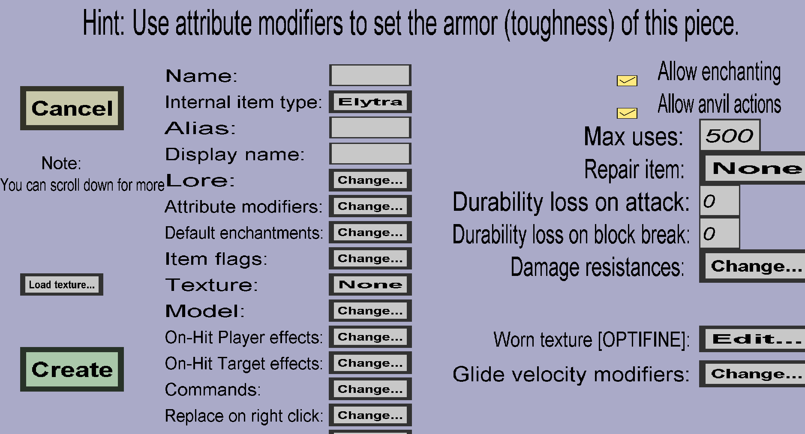

The elytra edit menu can be used to create custom elytra. Custom elytra can have custom textures, attribute modifiers, damage resistances, and glide mechanics. It should look like this:
Since custom elytra technically count as custom armor, they can have all properties that custom armor can have. However, their worn texture is slightly different. You can use the vanilla worn elytra texture as template:
If you right-click this image, your browser should allow you to save it to your computer, after which you can edit it with a paint program.
The glide velocity modifiers can be used to alter the glide behavior of this custom elytra. For instance, you can make it glide faster. Custom elytra can have any number of glide velocity modifiers. See this page for more information.